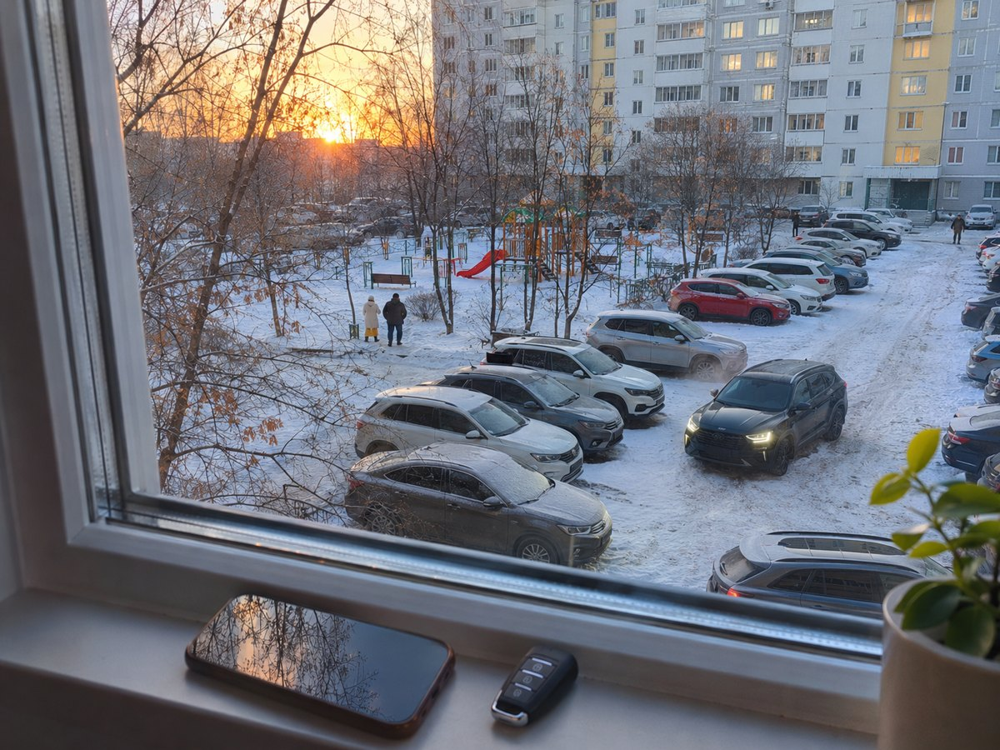
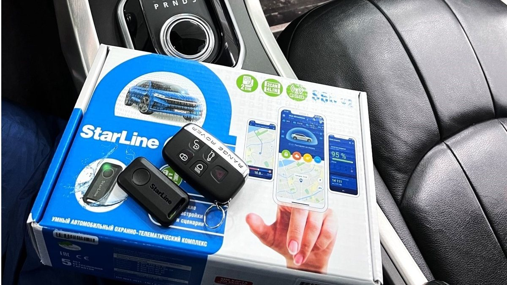
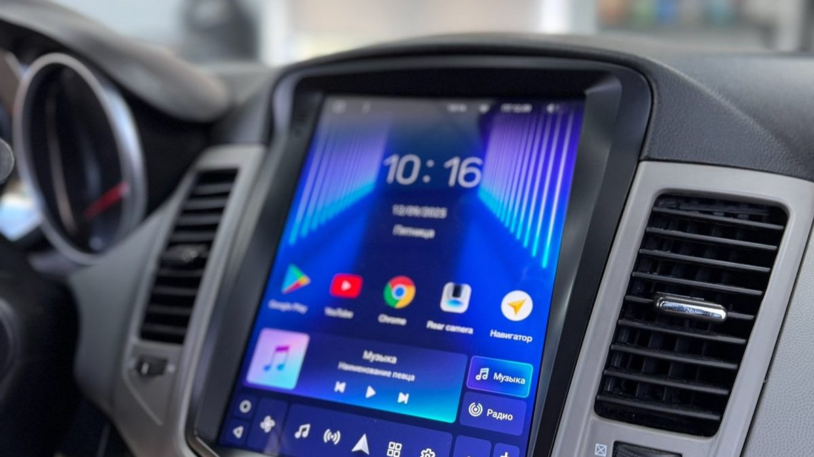

Один подъезд, два соседа, одно морозное утро. Первый выходит на балкон в тапках, вытягивает руку с брелоком в сторону парковки и жмёт кнопку второй раз, третий, пока брелок не пискнет в ответ. Второй в это время ещё лежит: его машина завелась по будильнику, а он только открыл приложение и посмотрел, сколько градусов в салоне. Обе машины прогреты, но утро у соседей разное.
Автозапуск с брелка надёжен и не зависит от сети, но упирается в дальность. Запуск с телефона работает откуда угодно, но зависит от связи и требует сим-карты в машине. Если машина ночует во дворе, выбор определяется тем, где именно она стоит, сколько между вами бетона и как вы привыкли жить с телефоном. Ниже разберём оба способа по-честному, со слабыми местами, и подскажем, когда нужны оба сразу.

У брелока путь короткий. Вы нажимаете кнопку, радиосигнал уходит напрямую на антенну в машине, блок заводит двигатель и отправляет ответ. Брелок с обратной связью пищит или показывает на экране, что мотор работает. Между вами и машиной нет посредников, поэтому задержка – доли секунды, а сеть и баланс сим-карты не важны.
У телефона путь длиннее. Приложение отправляет команду на сервер производителя, сервер передаёт её в GSM-модуль в машине через сотовую сеть, блок заводит двигатель и тем же путём сообщает результат. На всё уходит от нескольких секунд до полуминуты, зато расстояние больше не имеет значения: хоть из соседнего подъезда, хоть из другого города.
Отсюда простая логика. Брелку важно, сколько метров и стен между вами и машиной. Телефону важно, ловит ли сеть там, где стоит машина.
Плюсы брелока понятны с первого дня:
- работает без интернета и без сим-карты в машине;
- команда проходит мгновенно;
- брелок с экраном показывает температуру, состояние дверей и двигателя и пищит при тревоге;
- им пользуются люди, которые не дружат с приложениями: родители, водители служебных машин.
Слабое место одно, но зимой решающее – дальность. Цифры на коробке получены в чистом поле. Во дворе панельных домов сигнал гасят железобетонные стены, стеклопакеты с напылением, соседние машины и десятки чужих радиосигналов. Из квартиры на верхнем этаже, если окна выходят во двор, брелок обычно достаёт. Из квартиры с окнами на другую сторону дома – часто нет.
Ещё одна мелочь, которая злит в январе: на морозе батарейка брелока садится быстрее, и дальность падает вместе с ней. Если брелок «вдруг стал хуже ловить», сначала поменяйте батарейку.
Сигнализация с автозапуском с телефона снимает вопрос дальности целиком. Но ценят её не только за это. В приложении видно:
- температуру в салоне и двигателя, чтобы понять, пора ли выходить;
- напряжение аккумулятора, чтобы заметить проблему до того, как машина не заведётся;
- где стоит машина, если в системе есть GPS;
- историю тревог: кто и когда трогал машину ночью.
Слабые места тоже есть. В машине нужна сим-карта с тарифом. Связь в подземном паркинге или в гаражном кооперативе может пропадать. Команда идёт через сервер, и если у оператора или производителя сбой, запуск задержится. А сам телефон на морозе разряжается быстро, и в самый нужный момент может оказаться выключенным.

Вместо общих советов – три вопроса себе.
1. Видно ли машину из окна? Если да, брелка с обратной связью обычно хватает. Если машина за домом, за углом или на стоянке через дорогу, брелок будет срабатывать через раз.
2. Насколько вы привязаны к телефону? Если приложение открываете по утрам всё равно, запуск с телефона станет привычкой за неделю. Если нет, оно будет висеть неоткрытым, а вы так и будете искать брелок по карманам.
3. Куда ещё ездит машина? Работа с парковкой за проходной, дача, поездки по М8 с ночёвкой – всё это аргументы за связь через сеть. Машина, которая живёт только во дворе и у ближайшего магазина, может обойтись брелоком.
Для большинства дворов Ярославля ответ получается такой: брелок с экраном как основной канал, если машина под окном, и GSM как основной, если нет. А лучше всего – оба.
Брелок и телефон страхуют друг друга. Сеть пропала – выручает брелок. Брелок не достаёт – выручает приложение. Многие современные системы с GSM идут с брелоком в комплекте или позволяют его добавить, и разница в удобстве того стоит. В будни машина стоит под окном, и брелок с подоконника решает всё за секунду. В выходной она ночует у дачи или у родителей на другом берегу Которосли, и тогда выручает телефон. Один и тот же человек в разные дни пользуется разными каналами, и это нормально.
Например, StarLine GSM в исполнениях с брелоком даёт и запуск из приложения, и прямой канал с брелока. StarLine автозапуск с брелка при этом работает так же, как в системах без модуля связи: долгое нажатие или сочетание кнопок, и брелок подтверждает запуск. У Pandora 4G то же сочетание: приложение через сеть четвёртого поколения и брелок или метка рядом с машиной.
Второй канал продумывают на этапе выбора, а не после первой зимы. Добавить GSM к системе, где он не предусмотрен, бывает сложно, а иногда проще сразу взять нужное исполнение.
- Купить брелок «с дальностью два километра» для машины за домом. На бумаге хватит, во дворе – нет.
- Поставить GSM и не проверить связь на месте стоянки. Пять минут с телефоном у машины ночью покажут, ловит ли сеть.
- Забыть про сим-карту. У модуля свой номер и свой баланс. Если тариф кончился, запуск с телефона перестанет работать без предупреждения.
- Выбрать брелок без обратной связи. Команда ушла, а завелась машина или нет – непонятно.
- Не настроить автоматический запуск. По температуре и по будильнику машина заведётся сама, и спор «брелок или телефон» становится наполовину лишним.
Одна и та же система в двух машинах во дворе ловит по-разному, и причина часто не в брелоке.
- Место антенны. Приёмопередатчик брелока крепят на лобовое стекло, повыше и подальше от металла. Спрятанный за панелью ради эстетики, он теряет заметную часть дальности.
- Стекло с металлическим напылением. Атермальное лобовое и некоторые тонировочные плёнки гасят радиосигнал. Если у вас такое стекло, обсудите с мастером, где лучше поставить антенну.
- Где ставить машину. Несколько метров в сторону, чтобы между окном и машиной не было трансформаторной будки или гаражей, иногда дают больше, чем смена брелока.
- Антенна GSM-модуля. Её тоже не прячут в глухой металлический угол: от этого зависит, как быстро приложение достучится до машины на краю двора или в низине у реки.
Брелок не достаёт до машины – что можно сделать? Поменять батарейку, проверить, где стоит антенна в машине: её крепят повыше на лобовом стекле. Если не помогает, нужен модуль связи и запуск с телефона.
Можно ли заводить машину во дворе и оставлять работать? Если двор обозначен знаком «Жилая зона», правила дорожного движения запрещают там стоянку с работающим двигателем. Настройте прогрев так, чтобы машина работала столько, сколько нужно, а не полчаса.
Сколько стоит поставить запуск с телефона? Цена зависит от системы, модуля связи, обхода иммобилайзера под вашу модель и сложности разборки салона. Её называют после осмотра машины.
Что делать, если телефон сел, а брелка нет? Без второго канала придётся заводить ключом. Поэтому один брелок или метку стоит держать дома.
Запуск с телефона работает с механической коробкой? Да, если перед выходом выполнена программная нейтраль. Без неё система откажется заводить мотор.
Студия «Звук на Волге», Ярославль, проспект Октября, 82б. Работаем пн–пт с 8:30 до 20:00, сб–вс с 10:00 до 19:00. Ставим сигнализации с автозапуском с брелока и с управлением из приложения, с отслеживанием машины, подбираем исполнение под место, где ночует ваша машина. Для нового автомобиля можно не переживать за дилерскую гарантию: у студии есть необходимые сертификаты. После установки можно приехать поменять настройки прогрева или задать вопрос.
Подобрать брелок или приложение под ваш двор: автозапуск и охранные системы с установкой. Телефон +7 902 220-75-55, сообщения в ВК: vk.me/avtostil_yaroslavl.
Многие знают нас как «Автостиль». Мы выросли, обновились и назвались так, как давно звучим: «Звук на Волге». Адрес остался прежним.